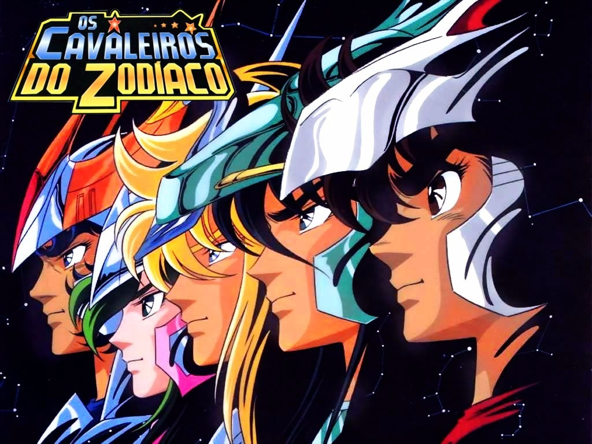
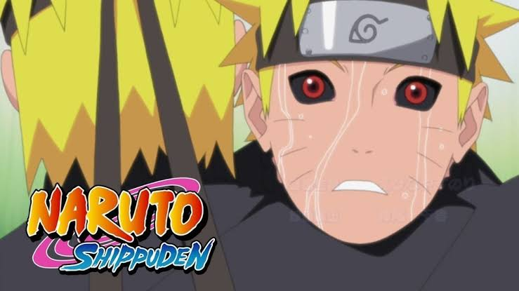
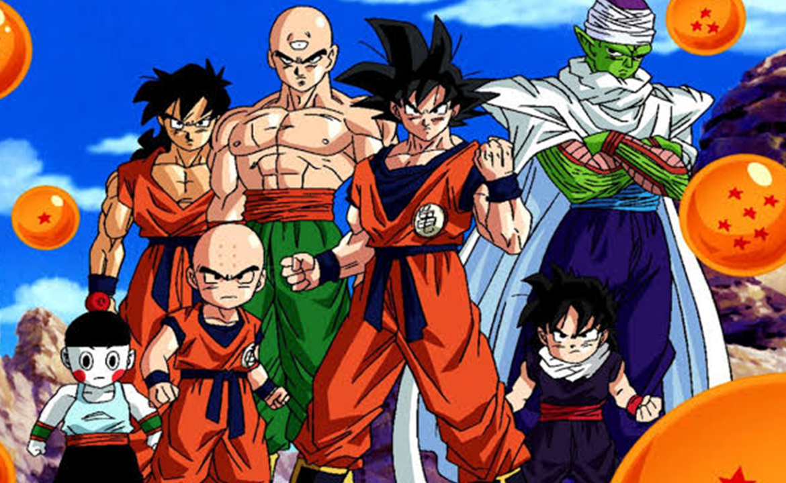

|  |
Os Cavaleiros do ZodíacoOs Cavaleiros do Zodíaco ou Saint Seya, conta a histórias de um grupo de cinco jovens guerreiros, que tinham de lutar para proteger Saori Kido, que era a reencarnação da deusa da sabedoria grega Atena, das forças do mal |
Shingeki no KyojinHá várias décadas atrás, a humanidade foi quase exterminada pelo súbito aparecimento de seres humanoides, conhecido como Titãs. Criaturas de tamanho enorme e de inteligência aparentemente baixa, que comiam humanos por prazer. No entanto, um pequeno grupo de seres humanos sobreviveu no interior de uma cidade protegida por paredes superiores a três vezes a altura dos maiores Titãs registados até à data. |
|
|  |
Naruto ShippudenNaruto Shippuden, é uma série anime que corresponde a segunda parte da série de mangá Naruto. Começou a ser exibida no dia 15 de fevereiro de 2007 na TV Tokyo, e no dia 2 de fevereiro de 2009 nos Estados Unidos pelo site oficial via streaming. No segundo semestre de 2009 foi adquirido pela Disney para ser exibido no seu canal a cabo Disney XD. |
 |
Hunter × HunterMonstros terríveis… Criaturas exóticas… Imensas riquezas… Tesouros escondidos… Enclaves malignos… Terras inexploradas… A palavra “desconhecido” guarda magia. E pessoas incríveis são atraídas para essa magia. Elas são conhecidas como… Hunters!” Gon é um altivo garoto que cresceu aos cuidados da tia no pacato vilarejo de Ilha de Baleia. Seu objetivo de vida é só um: tornar-se um Hunter, um incrível aventureiro que cruza o mundo em busca de recompensas, tesouros, conhecimento, enfim, todo tipo de coisa! |
|  |
Dragon Ball KaiJá adulto, Goku conhece seu irmão mais velho Raditz, que lhe informa que ambos são membros de uma raça extraterreste, os Saiyajins. Tal raça enviou Goku ainda criança para a Terra com o objetivo de conquistar o planeta, mas ele fere sua cabeça logo após a aterrisagem e esquece sua missão inicial. Goku se nega a ajudar Raditz a continuar a missão e começa a confrontar outros inimigos do espaço, como o príncipe Saiyajin Vegeta, que se torna seu rival e posteriormente seu aliado. |